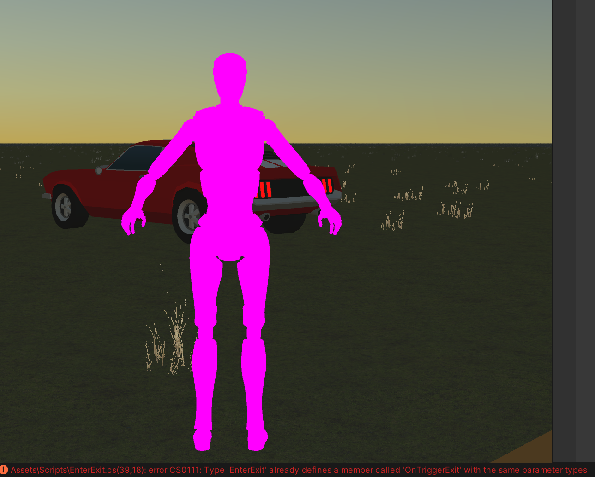

Began project with idea of virtual production but eventually became set on a sandbox world similar to GTA and other walkable/driveable games.
Focusing on physics for cars in the scene. Need to setup a city or environment for the world.
Added a Realistic Car Controller + working on finding an enter exit system for interacting with cars. Video example below.
Devlog
Goals: Enter/Exit, Build Environment, Create and implement interactables.
trying to pick between the realistic-car-controller or this simple car controller (below). The RCC model is very detailed which is making it hard to implement an enter/exit script without knowing parameters. Looking into adding interactables like money which the player can collect. Might try outputting to a canvas, the money values and/or a speed gauge for the car.
Switched the Realistic Car Controller asset to a simpler controller and model so that I could use an enter exit method. Took me a couple of days to find an enter/exit script that functioned with my assets, trying to build a city similar to my previous project where there is half city; half nature, now I'm done with the controller/movement functions.
added some final touches